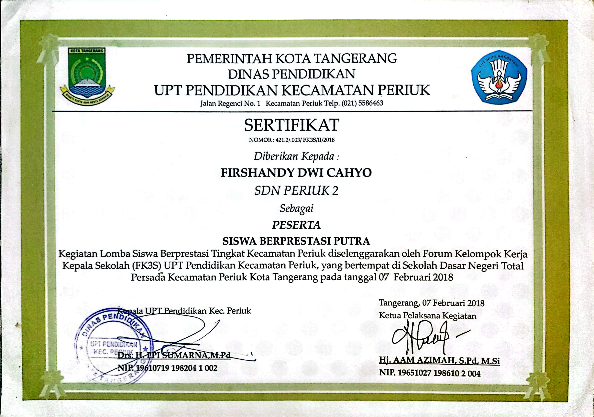
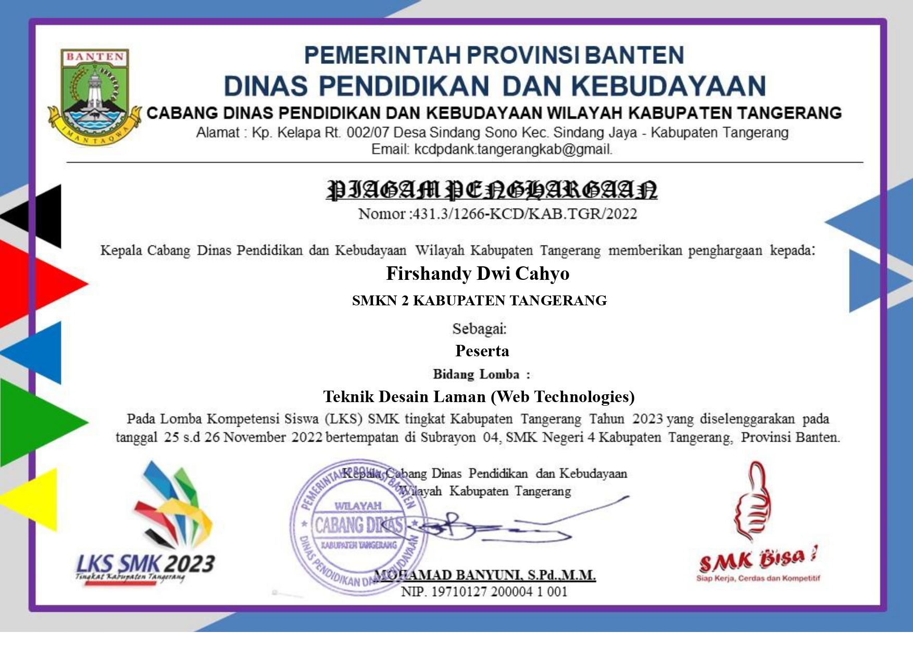

My Certificate
Halo, saya Firshandy Dwi Cahyo
(Shandy Dwi)
Salam kenal, saya susah berbicara dengan orang baru, saya suka dengan dunia Hardware dan Web Developer
My List Competition Certificate

SISWA BERPRESTASI PUTRA (30 besar)

Web Technologies (15 Besar)